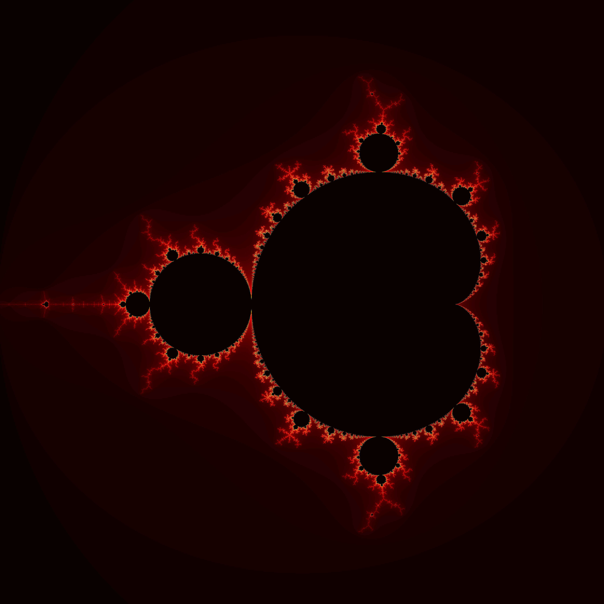

Some of you are probably familiar with the Mandelbrot set, an often referenced fractal pattern that is a visualization of a particular set of complex numbers.
This beautifully complex and endlessly self-similar shape stems from an incredibly simple function:
$f(z) = z^2 + c$
The Mandelbrot set is the answer to the question, "For which values of $c$ does this function remain bounded upon repeated iteration?" In plain English this just means the following: I'll start with $z = 0$ and pick any complex number for $c$, lets say $c = 1 + 2i$. I plug in those numbers and then get a result, which I then plug back in for $z$ and then repeat the process. If, upon endlessly repeating this process, the result never gets too large, then the complex number $c$ is a member of the Mandelbrot set. If the result keeps getting bigger and bigger then $c$ is not a member of the set.
Now an important question to ask is just how large is too large? It can actually be proven that if you ever obtain a result in which $|z| > 2$, then $z$ will always diverge to infinity eventually. This is handy if you want to generate an image like the ones I'm showing here, because you only need to check that $|z| < 2$, if it gets any bigger you can stop iterating since you already know it wont be a member of the set.
To create some nice Mandelbrot set images, we can write a simple program to generate values of $c$ and check each value to see if it is a member of the Mandelbrot set. If it is then we assign the color black to that value of $c$, if it is not then we assign a color which depends on the number of iterations it took until $|z| > 2$. In all the images I'm showing here, the brighter colors correspond to points that took a long time to diverge, and the darker red colors correspond to points that diverge very quickly. So it is the inner black part that is really the Mandelbrot set, the bright colorful part is just its outline. The code isn't very difficult to write so I'd encourage you to try it yourself if you have any experience programming, here are some examples to look at if you get stuck.

I created this "Mandelbrot zoom" gif by generating an image of the mandelbrot set over a progressively smaller region of the complex plane and then compiling all the images into a gif using imageio. Some similar but far more impressive Mandelbrot zooms have been made by others.
As that animation hopefully makes obvious, the Mandelbrot set is a fractal, meaning that it is self-similar across different length scales. Fractal-like behavior can be seen all over nature, for example in river deltas, blood vessels, tree branches, lightning, and my personal favorite, romanesco broccoli:
{kind=link}
{kind=link}
{kind=link}
{kind=link}

Not only is the Mandelbrot set a fractal, but it is the most fractally a fractal can possible be. This sounds like a ridiculous statement, but it's actually a mathematically provable claim. A fractal's "roughness", or complexity, can be measured by its Hausdorff dimension, which you can think of as measuring how much space the fractal curve occupies. For simple objects like lines, squares, & cubes, the Hausdorff dimension is equal to the more well known topological dimension, 1, 2, & 3 respectively. But fractals can have non-integer Hausdorff dimensions. For fractal curves like the boundary of the Mandelbrot set, the topological dimension is 1, but the Hausdorff dimension will be $1 \leq d \leq 2$. Below are some common fractals and their corresponding Hausdorff dimensions:


The boundary of the Mandelbrot set was proven to have a dimension of exactly 2 by Mitsuhiro Shishikura, meaning that it is a curve so complex and so dense that it essentially occupies as much space as a 2-dimensional object, even though it is topologically 1-dimensional! To try to wrap your head around this unfathomable complexity, you can start by zooming in on random parts of the Mandelbrot set and see what kinds of patterns you can find. Below are a few nice snapshots of interesting regions of the Mandelbrot set boundary that I looked at (click the images to expand them, they link to full size 300dpi images). Another astonishing fact about the mandelbrot set, is that it is connected, meaning that every black part of the images below is actually part of a single unbroken object, and all the regions could be seen to be connected by extremely fine filaments if you had sufficiently high resolution.


If you'd like to learn more about the Mandelbrot set, these two Numberphile videos are a great place to start: Video 1, Video 2
It's incredible to think that the stunning beauty and variety of patterns found in the Mandelbrot set are the result of the simple equation $f(z) = z^2 + c$. This is an excellent example of the concept of emergence, in which complex phenomena emerge from a system following simple rules (see Conway's Game of Life). As a physicist, I think this says something profound about the world we live in. While there are still some things that science hasn't been able to explain, The vast majority of complex phenomena observed in the physical world can be described by simple mathematical statements.
Variations on a Theme:
It would now be very reasonable to ask: "Well if the simple function $f(z) = z^2 + c$ can create such an amazing object in the complex plane, what about other functions?"
What a great question!
You could apply the same basic idea here to any function of the complex variable $z$ and a complex point $c$. Keep iterating the function, see for which values of $c$ the function diverges, and make an image. This has been done for the so-called "generalized Mandelbrot set", $f(z) = z^n + c$, but I haven't yet seen anyone generate images from functions of any other form. So thats exactly what I did! Here are some images of the "Mandelbrot-like" sets I generated from a variety of complex functions:
$f(z) = \frac{z}{e^z + c}$
$f(z) = z^z - c/z$
$f(z) = \frac{z^2 + z}{z^3 + c}$
$f(z) =\frac{1}{(z+c)^3}$
While these are all beautifully complex objects, and many exhibit fractal patterns, it doesn't seem that they are all self similar in the same way that the Mandelbrot set is, i.e. they don't seem to contain infinite copies of themselves. If I was a better mathematician or had more time to spend thinking about this, I may be able to say something more interesting about these sets, but for now they are just beautiful but mysterious pictures.
I'd be really happy to see someone else take a crack at making these and see if they can find any patterns in the sets produced by different functions! I'd be especially interested in seeing if the Hausdorff dimension has been calculated for any Mandelbrot-like set not of the form $f(z) = z^n + c$.